General Information
This branded website is publicly available at: Link to our final website published on GitHub Pages Link to our GitHub Repository
This website was created by:
- Milena Maksymiuk(ID: 231203)
- Maartje Kreijtz (ID: 225619)
- Lora Lichkova (ID: 230648)
- Isabela Chenhall (ID: 247252)
Content
Brand persona

Explanation of Brand name
The name of our brand is Sit. In a first glance it is a typical command dog owners use daily. However, it is more than that. The "S" in it is for STRIVE as we want to our users to strive for their goal of teaching their dogs more than just simple commands, but rather manners. The "I" in the name is for INSPIRE as we want to motivate dog owners to begging the process and become concistant in preserving the bond with their dog. Last, but not least the "T" is for TEACH which is our main purpose to help dog owners train their dogs.
Our brand logo justification
The logo is a literal and fun interpretation of the command ‘sit’ using dog-like features for the ‘s’ and the ‘t’ in a bold blue colour to make the design clear. The original design was hand-drawn and we used procreate to bring it to life and make it more clear and play around with colours. We made the letters more rounded to give a softer and more playful feeling and kept them close together and looped round each other to make it short so that the logo is scalable and can be used across various mediums and products other than the website and social media. The lighter blue behind the darker one is to add more dimension to the logo and we used the green and orange to dot the ‘I’ to bring in the brand colours and tie our brand concept together.
Here we provide you with the students and the pieces of content they have developed. We provided a link to the correct page within the website and other tasks.
| # | Student ID | Value | Name and link of content |
|---|---|---|---|
| 1. | 231203 | Milena Maksymiuk | Main page |
| 2. | 225619 | Maartje Kreijtz | About us Lean Canvas |
| 3. | 230648 | Lora Lichkova | Corporate page, Instagram page, TikTok page |
| 4. | 247252 | Isabela Chenhall | Courses page |
Production
Style guide

Design Elements
We have provided you with a detailed style guide in the form of a picture and an extensive justification for the design elements used on the website.
-
-
Color choices
Orange (#FF752B) is linked to optimism and warmth which helps put the brand’s friendly nature at the forefront of our brand. This also helps tie in our original concept of using dichromatic colours to show what a dog’s sight is, however with a lightened and warmer twist. - #Dark blue (2F5CDA) Shades of bright and darker blue are often associated with dogs due to its links with loyalty and trust. This colour is bright and bold, helping to associate our brand with our customer basis. This is also good in contrast with the other colours because of its darker shade.
- Light blue (#C5E0EF) This blue further shows the brands links with loyalty, and with a lighter colour also brings in elements of new beginnings and tranquillity to represent the brand’s training values when working with aggressive dogs.
- Green(#CDD53E) Green tends to evoke fresh and natural feelings which further brings forward the idea of new beginnings and a fresh start for training. The more muted and warmer green is to compliment the other colours in the pallet.
- Beige (#FFFCF3) Adding to the darker blue’s contrast, the beige adds a lighter colour for our backgrounds and less bright pages, whilst also maintaining the warm theme of the other colours. Along with its simplicity, it’s widely thought to bring a sense of comfort, which is especially apparent between the mix of these colours.
-
-
Font choices
Heading 1
Heading 2
Heading 3
For the creation of this website we used two different fonts Sigmar and Fredoka. We chose to use the sans-serif font Sigmar for headings as it is bulkier and easier to read and playful. The font is easily readable making it faster for the website users to find the information they are looking for based on the heading. This font matches our playful aesthetic providing people with a warm felling towards the brand when used with our brand colors, especially the green. We used the sans-serif font Fredoka for the paragraphs and as a main font for the website. We chose it because it is easy to read in paragraphs.
-
User interface patterns
Grids
To create the website we used mainly the template provided from Buas on Bootstrap. We used different template for some elements in the home page and to make the footer of all page of the website except the corporate. The grid style that we used in the pages is 12-column grid with mainly utilizing the 3 and 4 column grids for big screens and 6 columns for small screens.
Carousels
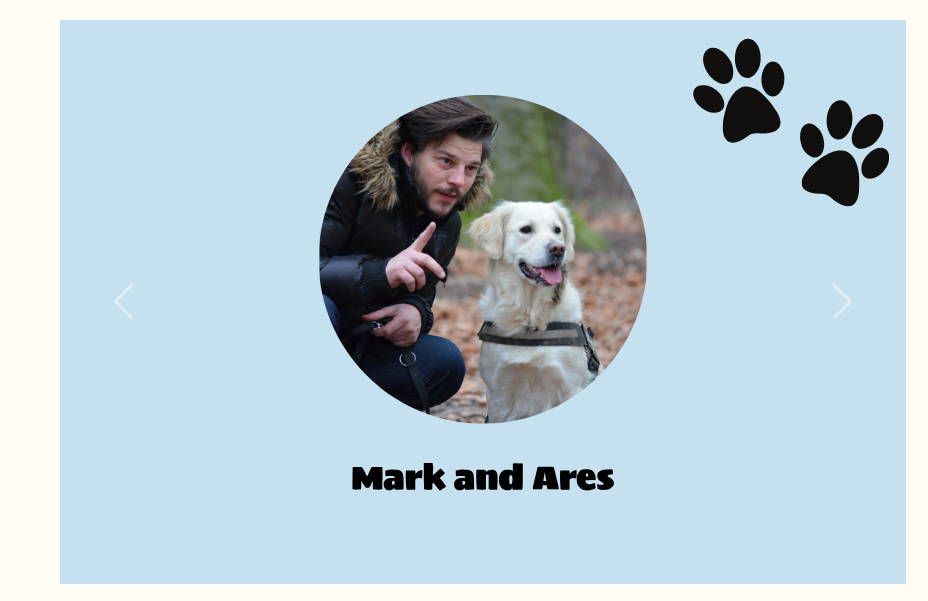We used the UI element carousel to guide our customers through the experiences of others who have done courses before and have given feedback. We used them in the home page as people can already learn the value our courses bring to their lives. We have use this UI element to create a more interactive communication with our website users.
Cards
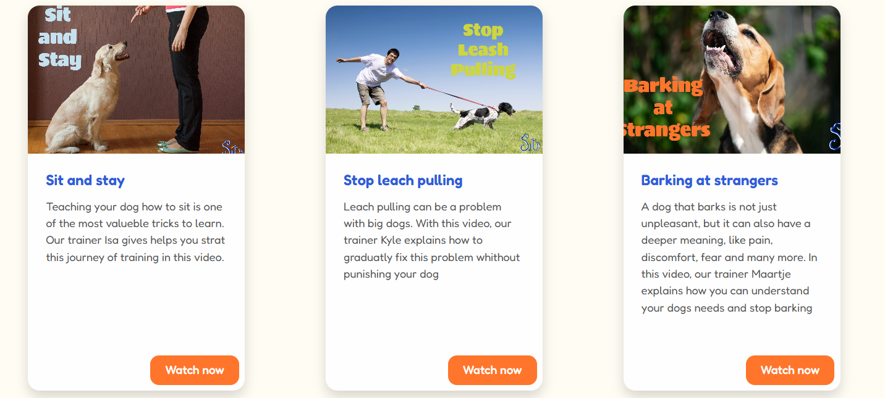As a website providing a service to customers we want to have a way for them to find a specific course which is why we used the UI element cards. To create the cards we used a template from ChatGPT which we changed based on our style guide to match the aesthetic of our website.
Buttons
In order for people to Sign up or Log in to our website and be able to access premium content we have used buttons to navigate them to take the action. We used a template outside of Bootstrap to create the buttons, but have adjusted them to match the brand guidelines.
The structure of the navigation and content
- For this project we used mainly the GitHub template buas-media-interactive/prj4-group-template. However, for some elements of the main page we used the Intensify template powered by Templated and distributed by ThemeWagon
- The source code for UX patterns other than the ones provided by the “Bootstrap” library (see getbootstrap.com/docs for a list of such patterns)
- Images that were not produced by students themselves, including when crediting is not mandatory (in other words, we ask you to credit Unsplash images)
- Banner Section Backgroun posted by Lum3n on Pixabay
- Thumbnail of first course posted by brixiv on Pixabay
- Thumbnail of second course posted by edwinheidt on Pixabay
- Thumbnail of third course posted by Ralphs_Fotos on Pixabay
- Thumbnail of fourth course posted by Winsker on Pixabay
- Thumbnail of fifth course posted by Couleur on Pixabay
- Thumbnail of sixth course posted by MishuHanda on Pixabay
- Feedback from a male customer
- Feedback from a female customer
- Your testing goals in other words, what you are trying to learn about your website?
- Test the basic functions like navigation bar, buttons and clickable parts to ensure this all directs back to the correct pages.
- Check to see if all the information is visible, readable, and easy to find, confirming that the website communicates our message to all users.
- Understand how users see the brand identity and core values of SIT, and whether these are shown effectively through content and visuals.
- Assess whether the design, layout, colors, and fonts evoke the intended emotional response and reflect the brand’s personality.
- Your testing methods, which includes information about:
- For our testing methods, we use a simple and clean setup, without too many distractions. The tester is set up against a wall with only their laptop in front of them, so there’s nothing to distract them. The testers get a link to the latest version of the website.
- We want to test with at least four participants, where two are from our target audience. They have dogs who can need some training and where the tester has a busy lifestyle.
- Three out of four testing’s will be done in real life, with one testing online. The setup is overall the same.
- At the beginning of each testing, we explained to the participants what they were testing for, without giving too much information away, as this were also questions to ask during the testing protocol.
- We explain a bit more of the testing protocol, that we’re going to ask them questions. We ask them to think out loud and share feedback during and after the testing. We further tell the testers that they will be record and that it will take around 15-20 minutes including feedback afterwards.
- We will record them from the back. This way we can see their movments, hear them speak and see how they control their cursor. I did this instead of screen recording so we can see more of the tester himself sitting in front of the website.
- The test protocol
Introduction and explenation “Thanks for helping test this student-made website. It presents a project called SIT. The reasong for this testing is to learn how users interact and react with our brand and how clearly it communicates its purpose. There are no right or wrong answers — just share your honest thoughts and speak out loud as you explore.”
Core Tasks
1. “Take a quick look at the site. What do you think this project is about?”
2. Can you go to the courses and watch the video about your dog pulling on the leach?
3. Could you try and find more information about the company/brand?
4. Can you see where ‘sit’ stands for?
5. Try and find the video that helps clearing behaviour about dogs jumping up to people. See if you have acces to it
6. Find the login button and login.
7. Can you find our values, and can you read them out loud to me?
8. Can you find out who is head of Marketing from our team
9. Click through the different sections. What kind of information do you find, explain out loud? Is anything confusing or missing?
9. What do you think of the font and headings? Is it readable and clear?
10. What kind of vibe do the colors give you?
Conclusion
- “What part of the site worked best for you?”
- “Was anything unclear or hard to find?”
- “Did anything feel out of place, broken, or unnecessary?”
- “If you could improve one thing, what would it be?”
- Your testing results, which includes information about:
- Navigation is clear and makes it easy to explore the website.
- Brand values are visible and align with the concept of SIT.
- Colors feel fresh and consistent, especially the off-white background gives a clean look and lets the colors pop out
- Font choices like the heading Sigmar were seen as friendly and playful, enhancing brand tone.
- Buttons and navigation details like paw prints and pop-out buttons were appreciated.
- About Us page is clear, especially the values section.
- Videos are easy to locate and well-placed in the layout
- SIT acronym is not easy to find the meaning of because it’s at the bottom of the home page
- Restricted videos having to subscribe model is confusing and unclear on what is asked from you
- Watch now button on the cards is too low and requires scrolling
- When redirected to ‘thanks for watching’ page, the message is off centered.
- Logo feedback – for some people the tail is not immediately recognizable, yet the head of the dog in the S is easily visible
- Color feedback – blue doesn’t immediately link to dogs or dog training.
- About Us page foucsses too much about the people and not enough about the brand, so change the values and people around
- No clear title for dog photo sections or course categories.
- Carousel images on the reviews is not working
- Missing features like a direct contact option for trainers.
- The homepage needs more visuals spacing and centering.
- Improvements that have been implemented on the final website (or that would be implemented if doing so would be too complex)
- Cleaned up the homepage to space it out more, as well as move sit and the explenation of our brand more upfront, for follow the hiearchy of importance.
- Changed ‘about us’ page layout to focus more on brand and values instead of team
- Removed ‘learn more’ buttons at the meet the team cards, instead changed them to flip cards
- Adjusted text placement in banners to avoid cutoffs and misalignment.
- Made sure all buttons have a page where they lead to
- Fixed the carousel image issues
- Used more lime green to balance color usage
- More consistent use of lime green to reinforce branding across sections.
- Planned contact page update to highlight social links and allow trainer inquiries
- Raise the ‘Watch now’ buttons on course cards to avoid unnecessary scrolling.
- Planned visual update to increase logo size and better emphasize the tail in design.
- Make all the buttons look like bones.
-
19.03.2025
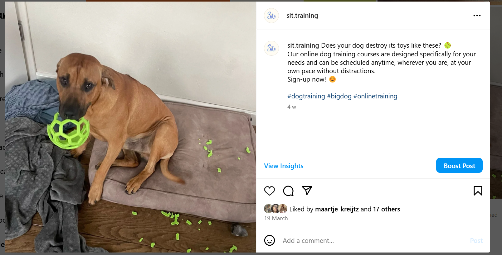 -
23.03.2025
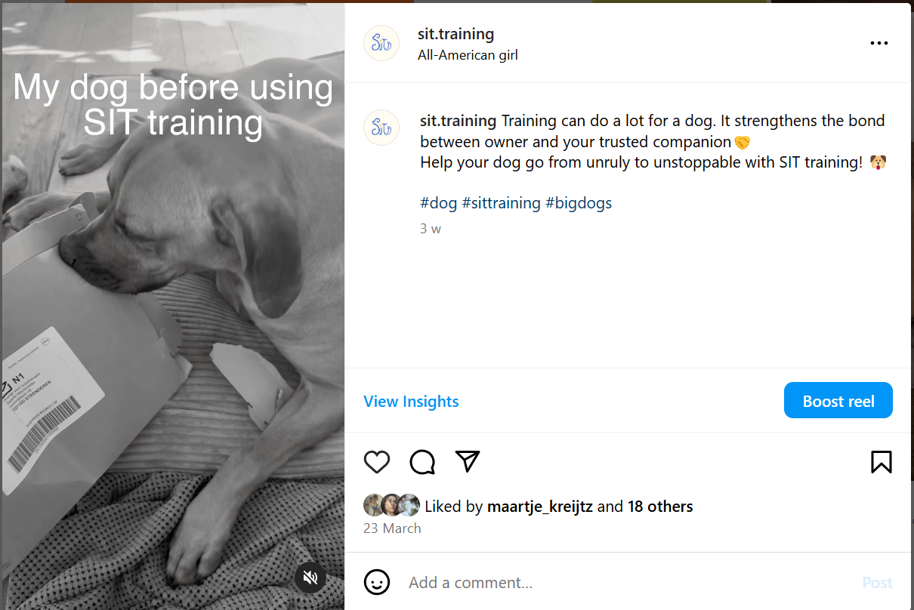 -
26.03.2025
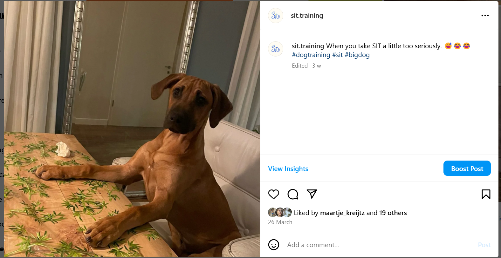 -
28.03.2025
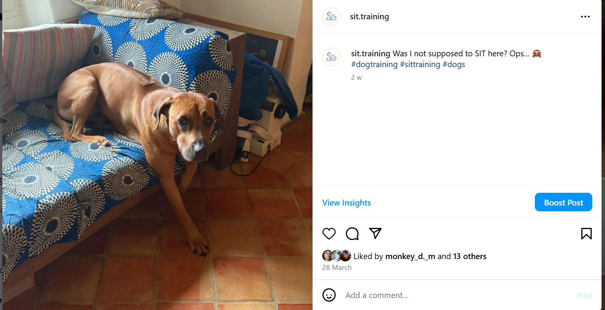 -
01.04.2025
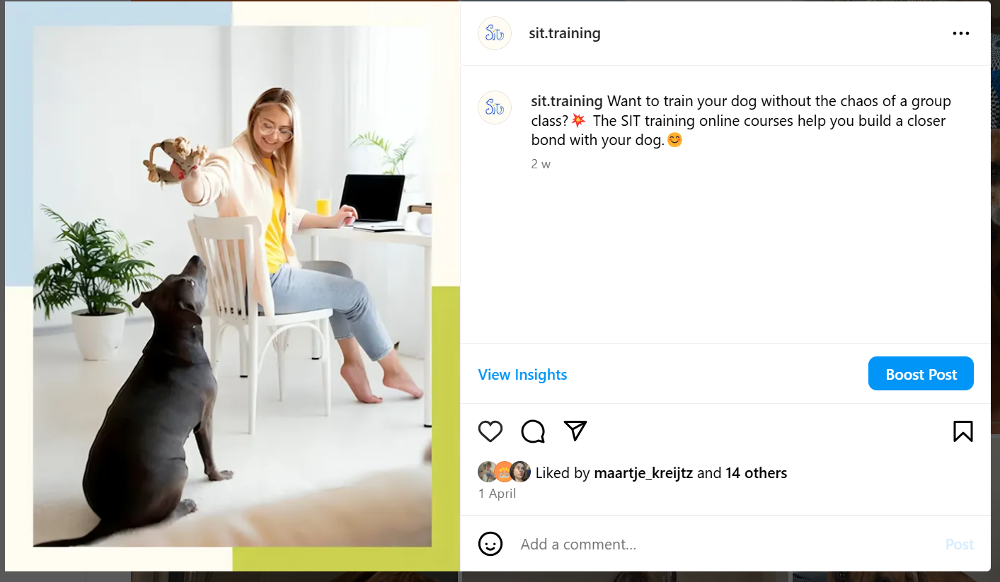 -
05.04.2025
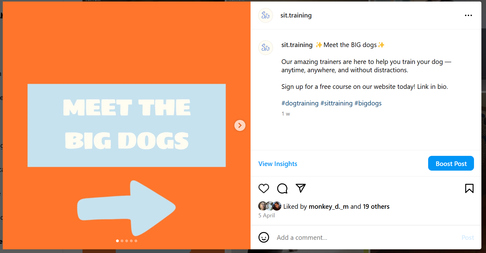 -
07.04.2025
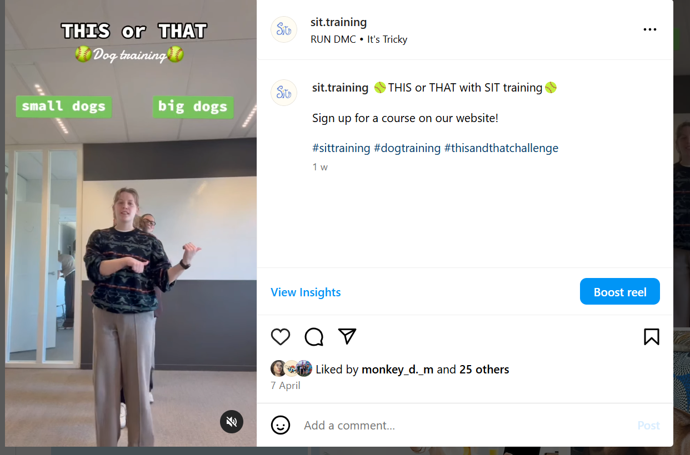 -
10.04.2025
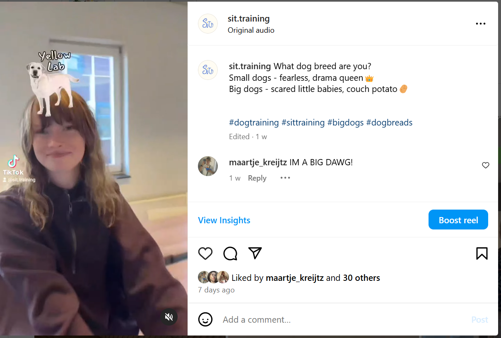 -
15.04.2025
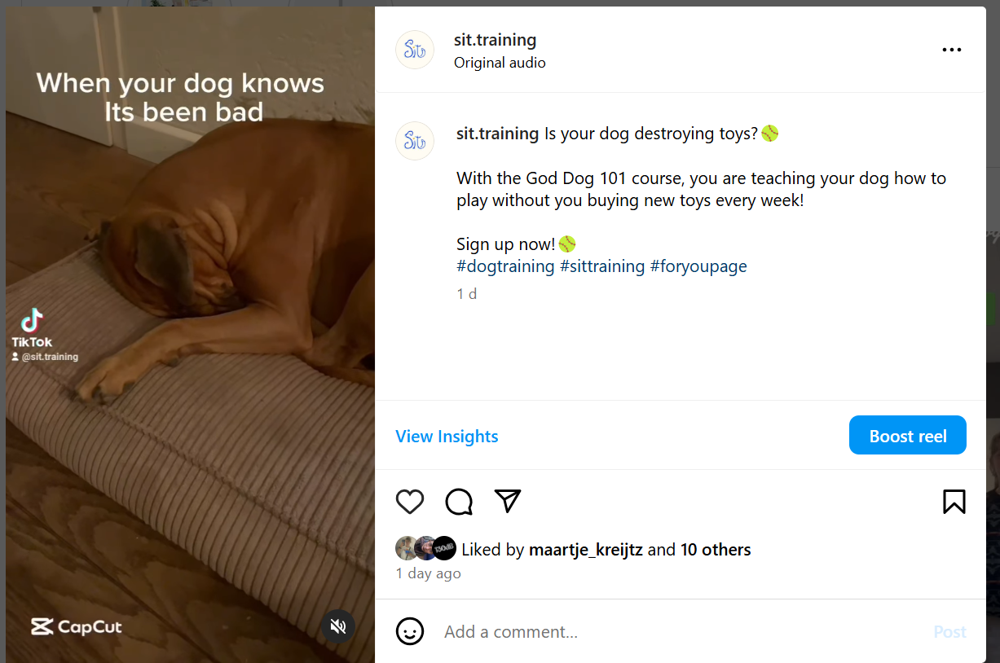 - On our Lean Canvas V5, we have three problems stated that came from our interviews. The. First finding was that people had a busy lifestyle, and that nowadays, time really is money. Everyone wants to schedule precious time they have away from work or other responsibilites with fun and exciting adventures. Having a dog means a lot of outside adventures, unless it has some bad behaviour and you need to give up that time to dog training, where you’re in a group with others, who also want the attention of the trainer. Traditional dog training is filled with distractions and inefficient use of time.
- The second problem is that quite some people have big breeds in urban areas. With cities and countries becoming more and more dense, its clear that we’re also living very close together as a society. Big dogs need space and time, as well as be obiedient to not cause any problems within the areas we have to share with a lot of people. To have a small dog that’s not listening is annoying, but having a big dog jumping against people can be a safety problem for the peopl around it.
- Our thrid and final problem is that most dog training follows the same principle. A class with a lot of dogs – most of the timethis is with the same age group. Within this dog training there's most of the time only one dog trainer who must divide his attention to a group of people at the same time. If you're lucky you're going to get more time but everyone in that's of course wants to have the same attention this is very outdated and needs to be updated.
- There are problems we decided to focus on two of the main problems this can be the misbehaved dogs, and we couldn't find the people with busy lifestyle and lack of flexible training together. Some of the solutions we have is a website with a link to a professional dog trainer that can help you one-on-one in a call or three via video call with your trip to help you reach your goals. With this solution we focus mainly on the flexibility problem for people yeah nobody has a busy lifestyle and made one place where they could find anything they need for their dog training.
- Beside the one-to-one video calls we also have another solution which are prerecorded videos with easy-to-follow instructions, these videos will be stored in our courses files where people can access them anytime they want.
- Our last solution will be that everything will be made in the same style this gives cohesiveness over the whole company which is important for people to feel trusted with our community and brands this solution ties into the flexibility and for busy lifestyle from our target audience because with everything having the same style it's easy to structure and you can be easily see where you left off and where you have to begin again.
- We see our customers as 20- to 35-year-olds early GenZ or millennials living in urban areas who are combining a high paying or busy job with the training of their dogs. During interviews we found that these people are looking for more time efficient and flexible solutions for a training that suits their busy lifestyle and could work around schedules. In our program interviews we also found out that not everyone is very happy about traditional training anymore, as not everyone wants to socialize during that time, instead they want to focus on their own dog and give them the attention they need.
- Early adopters in these customer segments are mainly millennials and urban cities with a busy work life and overall have an above average salary. They also have medium to big sized dog who has some behavioral problems that needs proper training, but they want to work around their schedule. These millennials are besides hardworking also very outgoing and have a great love for their dogs. In our brand persona, we meet Anna and her dog Finn, and she fits this description perfectly. She is a young woman with a dog that needs some behavioral training, and in their free time they ove going on long walks, hikes and spending time outdoors together or with their friends who also have dogs. Anna could be one of the early adopters of our brand. She works in the office long days and Finn goes with her to the office. He is very socialized with people but lacks some skills with other dogs. When she comes home, she has a call scheduled with one of our trainers to work for 45 minutes on Finn’s behavioral issues. After this call the instructor sends her two videos from our website that help her understand why Finn might be reactive to other dogs, and another one on how to correct the behavior next time it happens. Anna can work on the tips and tricks in the video at home after work, as well as next time they go for a long walk. She is able to talk and show the trainer the progress she and Finn made the next time they meet.
- SIT - a fresh start. Train your dog around your schedule. With our service, you can be flexible and train from anywhere. You don't have to sign up for weekly classes, and you won't be distracted by others. Whether your dog has behavioral issues or you're starting fresh, dog training doesn't have to be hard or difficult. Create a harmonious bond with your dog by working together without punishment or discomfort. Achieve results by collaborating with your dog, not making them work for you. You're not tied to one place or time, so even when you're on vacation, away for a weekend, or at a friend's house, you can still practice with our videos or schedule a consultation to get the directions you need.
- An unfair advantage we have over for example other influencers who upload to other social media sites, is besides just dog training we also solve a lifestyle problem. We're not working on a Yeah specific timeline or with other dogs in the mix we are personal and to the point along with our courses that can help you reach your goals faster. We fix the lifestyle of having to give away a lot of your free time for dog training when you can do it from home or anywhere in the world on your own schedule, for example, after work.
- As a starting business where people get easy on the channels periods or social media were going for Acer driving TikTok, as these are the most used platforms by early GenZ and millennials often as of the moment. All these channels we want to make related content to our brands, as well as share some feedback or positive reviews from users. Next to online marketing, we’re also collaborating with registered and licensed/registered vet offices. For example: flyers and business cards, as well as some video promotion in the waiting areas and on the tables/counters. If people come in with dogs and ask about behavior, we’re also playing into the word-of-mouth marketing between veterinarians, friends and family. Next to that we’ll advertise on social media (meta) like Instagram and Facebook. This is tied to algorithm. We believe that this is a good way to get customers, as they are online a lot and with repeated advertisement it can influence them to try it out.
- Some key metrics we would like to measure are the weekly active users we'll come back for new classes weekly have video consultations with our certified dog trainers and watched videos from our courses to be inspired or to help them with their next behavioral training. For our website we want to be able to see the active users and clicks or through how many times they watched certain videos.
- What people love in they are also able to see how many consultations they said within the last month everyone gets bills at the end of the month periods
- Another key metric we have is have weekly check in emails with some stats of the progress. We were inspired by Duolingo, who sends all their users weekly reports about how they are doing and what they learned.
- In these weekly reports users can see what videos they watched and give the suggestions for other videos that might be interesting. If the customer had a personal consultation, it is also stated what they talked about and some key takeaways of the call. Along with that, it will be in the brand style, with a fun fact here and there related to dogs, and an empowering message to lift their spirits
- Our first and most important one is ‘one-to-one consultations’. This is what makes our brand personal. Have one certified trainer to help you through the difficult parts of training with your dog. Every consultant will be 45 minutes, as it is researched that meetings between 30-60 minutes are most effective and will cost €25. We researched prices for hourly dog training, which on average are between €40-80 an hour. Keeping in mind that it will be online as well as not the full hour, we decided on this rate. Every customer can schedule in as much consultations as they want. The system will take note of the consultations and bill you at the end of the month.
- Our second one is the ‘BIG DOG PACK’. This entails unlimited access to our video library, including new and just uploaded videos. This will be a monthly subscription of €30, which you can additionally subscribe to or subscribe to it on its own without any consultations. This is a subscription most people will buy for the time being when training. Some of our solution interviews stated that they would buy this pack between 2-4 months.
- The final one is product placement in our videos used for our courses. Working together with certain brands to use their treats, a certain leash with unique qualities like adjustable straps or a quick grab handle, or dog beds used to practice ‘place’ in the video. We’re starting with just €500 a month, which for product placement is doable. We try to mainly use them in the videos which are available for everyone, like our ‘How to sit’ video, so the reach is bigger. These products might also get recommended on our social page.
- Our main cost are the content creation of the videos including:
- Renting of equipment
- Renting of filming place
We will film with our own certified dog trainers, but will have editors to help us edit the videos in a professional and cohesive manner. - Website development
- Template + freelancer to help €1300 once
- Domain name €40 p/y
- Content creation
- Renting equipment - €500 p/y
- (Editing) software (Video/Photo) - €400 once
- Freelance editor - €200 p/m
- Renting shooting location - €100 per day - total of 10 shootings days at location
- Marketing
- Posters, flyers, business cards - € 300 p/y
- Short video content-€20/hour - made by team
- Placement fees videos: €120 p/m
- Meta Marketing, ads on Instagram to target group - €15 p/week for 10 campaign weeks a year
- Other:
- Legal fees - €150 p/m
- Buffer building - €60 p/m
- To break even during the first year:
- 4 sponsorship deals (4*€500) with:
- 26 consultations per month or 322 consultations in a yearor:
- 269 customers buying the 'BIG DOG' plan for one month
- SIT is platform for flexible and modern dog training. It’s designed for urban dog owners with busy lives. Our service consists of one-on-one video consultations with certified trainers and a course library of easy-to-follow and pre-recorded video courses. This is all tied into a cohesive experience made to fit into the lives of our users. With SIT, training becomes personal, accessible, and stress-free – no crowded group classes, no long waiting lines, just real results at your own pace.
This directly supports our unique value proposition: “SIT – a fresh start. Train your dog around your schedule.” SIT gives users the freedom to work on their dog’s behavior in a setting that’s comfortable for them and their dog. This can be at home, in a backyard or maybe even during a weekend away. Our solution focuses not just on training, but on creating a deeper trust between dog and owner, through positive and playful experiences.
Our brand identity is fixing lifestyle routines through the modern take on dog training. We focues on early Gen Z and millennial dog owners – like Anna and her dog – who prioritizes both her career her dog Finn. The service of online dog training is designed to reflect their reality: all in one place, mobile-friendly, real connections, and built for progress, not perfection. Every part of SIT serves that purpose, from the clear yet playful design to the personal touch in weekly progress reports reinforces the message, SIT is fit for your lifestyle.
The website we have create has one main function and that is to offer courses to dog owners to train their misbehaving dogs. For the distribution of the information across our website we used four main pages the home, the about us, course and the contact page. We took inspirations from online course for learning a language or other skills in the regards of making the layout of the website.
Home page
In the home page we have several different sections which bring a unique value to our website. The first section people see is the hero section with which we welcome them and were the call-to-action is which encourages them to sign up. The next section contains the meaning of our brand SIT. After which we have a section with cards which are used to showcase the courses we provide to people. Through the cards on the main people can directly sign up for a course and then go to the courses page to explore even more new opportunities. We have a section with carousels in which we show the reviews of previous users who have enjoyed and learned a lot throughout the course in how to train their dogs.Course page
In the courses page we have only one section containing of six cards which provide people with the course we offer. Each card contains information about a different course by giving people a brief explanation about what they can expect. Three of the cards are not active and have a blurred thumbnail and do not show the information about the courses as the person has not paid to access them.About us
In the about us page, we have four sections. The first section we have is a container containing the information about the brand itself. There we explain our innovative way of perceiving dog training and education. In the second section, we have the vision of our brand what we inspire to bring in the world and they way we are going to achieve it. The third section of our website are cards including information about the team behind creating the brand. And the last section of our page shows the brand values through the form of inactive buttons.The contact page
In this page we have only one section which is a contact form which people can use to connect with the trainers for our courses and send them a message. The can add their name and email address to make it easier for our trainers to get back to them ones they receive the message.Credits
Please provide links and/or credits for third-party elements including:
Testing Report
Please write about…
Positive results of UX an UI ranked through most stated points by testers
.Negative findings:
Implemented improvements
Planned improvements
Marketing
Context of campaign and promotional activities
SIT dog training is an online platform providing people with accessible online training for big dogs. In the period between 19th of March and 16th of April we created and executed a creative marketing campaign. The campaign’s goal was to raise awareness to people about the existence of an easily accessible online dog training. We wanted to portray the brand as an understanding of the struggles dog owners face with disobedient pets and create a community around this struggle. SIT training offers people with various dog trainings focusing on obedience, and puppy training. We executed the campaign on Instagram and TikTok. We want people to see us not only as people who would help them with train their pet companions, but also like a friend that understands their struggles in taking care of a big dog.
For this marketing campaign we set up three different objectives. The first objective is to reach 1000 users by the 16th of April, measured through the accounts analytics. We want to reach 500 people on each platform. We will do this by posting regularly high quality visually appealing photos and videos of dogs who have behaved improperly. The reasoning behind this content types is to connect with the target audience on a deeper level and make them feel understood. Our second objective is to have at least 50content interactions weekly from our follower during the duration of the campaign, measured through account analytics such as . The content we would share on both platforms will be focused on making the target audience feel like there is a save space to communicate their struggles and reach out for help from our trainers. On TikTok we will post videos with trending sounds to showcase the playfulness of our trainers and some of the struggles. On Instagram we will share photos and videos of misbehaving dogs. Our third objective is to have 10% of our followers to feel supported and understood in the challenges they face with taking care of a big dog, measured through a poll on Instagram stories. The story will include a video of a destroyed pantry which is done by a dog. The question we will ask will be to see if they are also experiencing such troubles and to see if they feel understood. We want for our target audience to interact with the content we provide and in the end of the campaign to make them follow us and visit our website. We at SIT training want this campaign to showcase the friendly, helpful and joyful side of our brand and to inspire more big dog owners to sign up for a course.
During the campaign, we noticed that people interacted more with content where there was a dog rather than only people. This is why during the running time of our campaign we tried to post as much content as possible featuring our dog, Leo. The target audience found videos including Leo more interesting due to the relatable content we created with him.
For our first objective we observed that by the 16th of April we had achieved our goal as we managed to reach 769 account through our high visual posts and interesting and relatable videos. On TikTok, we had a reach of 625 people on our first post. Meaning, we had achieved our objective with the first post. However, the TikTok’s we uploaded did not so good as they only reached around 150 people each. We observed the difference in the posts such as the participants in the video itself and the hashtags used. In the first post we had a dog (Leo) and in the following ones it was just us doing trending challenges, which was not appealing to the target audience. In addition, we used #foryoupage for the first post which brought more people, and the second two posts did not have that hashtag which is a big part of the reason why we had reach fewer people in those posts.


For our second objective we wanted to have 150 interaction on Instagram and 50 on TikTok for the duration of the campaign. On TikTok we managed to have 78 like on our videos throughout the run time of our campaign and one person saved the video in their saves. For the Instagram in the same period we managed to have 131 interactions with all posts, reels and stories. We did not manage to achieve our objective in the specific number of interactions we wanted from each platform, but we have reached the set number of 200 interactions. During the campaign we could have changed the objective to a lesser amount of interactions on Instagram and a bigger number of interactions on TikTok, in order to successfully have achieved our objective.


For our third objective we wanted to make 10% of our followers feel supported and understood in the challenges they face with taking care of a big dog. We measured this through a story poll on Instagram asking them if they can leave their dogs home alone. We received 48 responses with 60% of them being “Yes” and 40% of them being “No”. You can see the story we posted below. With the caption we tried to make the connection between us and our struggling followers who have to take care of a reckless big dog which might destroy furniture and toys. We this poll we wanted to show dog owners that we understand them and we have experienced the same situation as them and are here to help.

Platforms
To execute our marketing communication campaign, we decided to use Instagram and TikTok. The tone of voice of our campaign is light and humorous and the target audience we have chosen is Millennials. The platforms we have chosen are TikTok and Instagram are two of the most used platforms by Millennials. We also found that this generation is using Instagram to connect with brands, and we want to promote our new online dog service platform and training courses through our profile. With our Instagram brand we wanted to connect with our target audience by showing them that we understand them and they can rely on us. We have posted posts (static, carousels , reels) and stories. We chose to use TikTok as 40% of Millennial TikTok users say that the platform helps them find new things and 1 in 2 views the platform as entertaining. On TikTok we wanted to both entertain and engage with our target audience. With did this by posting videos with trending sound and videos of us using viral sounds on the platform.
Learning Points
1 week
During the first week of our promotional campaign, we wanted to interact with the audience by sharing relatable content which will make them feel understood. We posted on both social media. On Instagram we posted a photo of a cute dog which had destroyed its toy and looked ashamed of the act. Later the same week we posted a reel on which we show the before SIT training and the after. Before posting the video as a reel on Instagram we posted as a TikTok. In the end of the week, we compared the interactions of the post. Each post was liked by 16 people.After we saw the few interactions on our posts we want to post more regurarly to get more engagment from our followers and reach more new followers.
2 week
In the second week, we posted mainly dog photos with funny captions. The content dogs doing things that they are not supposed to be doing such as sitting on a dining table. In this we could not film more videos with Leo for our TikTok. Our posts was viewed 77 times and we managed to reach 37 accounts . However, the interactions with the post were 17 likes, no comments, and no shares. We analyzed the content and concluded that we need to change the posting times and make them consistent.
3 week
In the third week, we continued posting only on Instagram. With the posts we wanted to raise awareness about our trainers and how the course work. We could not achieve our goal to post consistently during the week as we had busy schedules. Even though, we did not have time and posted only two times during the week each post received more than a hundred views. However, the interactions were around 15 per post. After this week, we decided to start posting video content as well as more stories. We wanted to try and get more people engaged with our posts.
4 week
In the fourth week of the campaign, we posted reels and stories to engage with our followers and attract new ones. On both platforms we posted the same videos. The videos contained viral TikTok challenges and sounds. On the stories we encouraged people to interact with our posts. We also did polls with our followers to interact with. In the last week, we had 1 607 view on Instagram, and had a reach 596 people. The interactions with our posts were 61 and the distribution was 69,9% reels, 15,1% posts, and 15,1% stories. 75,3% were from followers.
What we saw worked best on TikTok was using the hashtag #foryoupage under our posts as the first and last post received more views on the videos. Other posts on TikTok that did not have the same hashtag, but different ones did not earn high number of views. On Instagram we observed that people viewed more the reels than the regular posts or carousels. Meaning that short video content received more views. However, we found out that our posts were not that engaging to the audience due to the low number of interactions (likes, comments and shares). If we were to start the campaign again, we would focus more on the short video content where we would explain more about the brand and try to engage the customers more by asking them about their own stories about miss behaving dogs. Another thing we would do differently is post more stories to interact and make them act in connecting with our brand such as posting more polls or questionnaires. We would implement this as change due to the responses we received to the polls we shared on our stories related to the visual materials we provided for them. In addition, to promote the posts to our followers we will make a story announcing the new post and telling more about the content we have provided in the post. This short running campaign gave us the opportunity to learn more about how to interact with the target audience in a better way for future campaigns.
Future Planning
If this campaign were to continue in the future, we would implement some changes in regards of the posting and scheduling of the content. On Instagram we would try to focus on more cohesive looking posts for static ones and posting more short video content. In the begging of the campaign, we were still refining our brand colors and would have made it easier for the run of the campaign if we could post more content using the brand identity and presenting ourselves as a well-established brand not only post pictures. In regards of the short video content, we filmed more videos of us interacting with a dog and asking them to follow our commands and those of their owners to show case that training a dog creates a bond between owners and the companions themselves. On TikTok, we would change our approach from posting viral content to posting more narrower content interesting for the dog owners. Such as using popular sounds in the dog owner community on the platform. Dog owners on TikTok have their community where they already share their struggles and support one another. We want to intergrade ourselves as part of the community. Our brand is more than just online training, it is a friend that owners can rely on. More attention should be paid to specific hashtags, sounds and keywords when targeting our audience. As we are aiming for our target audience to find about our brand mainly through social media and the fact that younger generations find information on it. As we mentioned Millennials mainly rely on Instagram to find and connect with brands and use TikTok to find new things including brands.
Professionalism
In this part of the corporate page we have uploaded all posted content from our marketing campaign in order of posting and platform which the have been posted on. Here we provide links to the Instagram and TikTok accounts.Each post has been added as link as well.
Instagram posts
TikTok posts
Instagram Stories
Management
Lean Canvas 5

Problem
Within these problems there are also already some existing alternatives. For example, blogs and websites that link to training or videos. YouTube is already filled with training videos from dog trainers all around the world with different opinions. On vertical platforms, for example Instagram and TikTok, a lot of dog influencers with large following that share their own tips and tricks, the only problem with this is that it's all spread out and not very personal. That’s where we come in:
Solution
Customer segments
Unique value proposition
Unfair advantage
Channels
Key metrics
This type of metric can have a customer hooked and wanting to return to our website. It also gives a feeling of great results, which make users happy and talk positive about the brand.
Revenue streams
We have three revenue streams.
Cost structure
Service
Validation of Assumptions
Problem interviews
In our problem interviews, we explored the challenges dog owners face specifically to do with behavioural issues within their dogs. We identified key points to help us shape our concept and focus on elements of our brand such as behavioural training. One of commonly mentioned frustrations within the interviews were issues in public either with their own dog or other people’s, such as excessive barking, off-leash dogs and jumping up. These situations especially with larger dogs were seen as both stressful and unsafe. A recurring theme across interviews was the link between separation anxiety and aggressive behaviour. Many owners observed that their dogs became destructive or reactive when left alone, often chewing furniture or items around the house and struggling to cope for extended periods without their owner home. This made everyday activities like going to work or social events more complicated and stressful for the owners. Training emerged as a crucial factor, particularly for those with larger breeds, where proper behaviour was considered essential not only for comfort but also for safety. Participants agreed that while dog ownership comes with many rewards, it also involves real responsibilities—and many said they would be willing to invest a fair amount of money in training, especially if the programmes were certified and credible. These insights highlighted the importance of providing both behavioural support and practical solutions that fit into modern lifestyles.
Solution interviews
Throughout our solution interviews, we gave the interviewees a look at our website and brand, testing the concept of our dog training platform and gathered valuable insights helping us to further shape our business model and features of the website and brand. A key insight was that a rigid monthly subscription model would not suit all users. Many younger interviewees such as students and young professionals, preferred a flexible, pay-per-course system to avoid financial pressure and to feel more in control. Although there was a balance and some were open to monthly payments, this was often tied to expectations of high value or flexibility in session selection. The idea of a large, diverse video library was received positively, particularly if trainers could recommend specific videos tailored to the dog's needs. 1-on-1 training was also highly valued, but users emphasised the need for an introductory session to build trust and understanding with the trainers. Trust playing a crucial role was a common theme in the feedback—recommendations from friends, vets, or fellow dog owners were cited as the most convincing factors in signing up. Several interviewees appreciated the playful tone of the platform, but advised leaning more into informative content, especially on social media, where educational and animal-friendly messaging is key. Features like evaluations with trainers, referral systems, reviews on the site, and centralised access to calls and videos were also highlighted as priorities. Practical concerns like screen fatigue, distractions during outdoor training, and accessibility for reactive dogs were mentioned, reinforcing the need for flexible, user-friendly design. Overall, the interviews confirmed strong interest in an accessible and supportive dog training service that combines educational value, trainer guidance, and trust—helping users not only start, but also stick with their training journey.
Appendix
Please use the list below to provide links to evidence for all parts of your justication. Please double-check all links before delivering the website. Do not hesitate to refer to these numbers above.